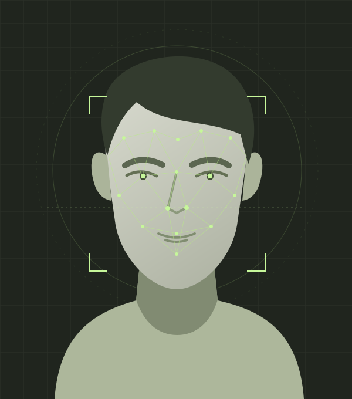

Your reference + scene.
Add one or many target images, then a clear reference face. You can add up to four photos of the same person to help identity matching.
FACE SWAPPING, ON YOUR TERMS
Visenlo is a local AI face-swap app for Windows and Linux, with a CPU setup for macOS. Bring the identity from a reference photo into a target scene. Your images stay on your computer.

FACE STUDY / 001SOURCE → TARGET01 / THE WORKFLOW
The reference supplies the face identity. The target supplies the image you want to edit. Visenlo brings them together in a local workspace.
Add one or many target images, then a clear reference face. You can add up to four photos of the same person to help identity matching.
Keep the default model for a first swap. For group photos, choose the target face: faces are numbered from 0, left to right.
Run identity swap. Each completed target appears in the gallery with a processing report and an automatically saved PNG in outputs/.
INSIDE THE ACTUAL APP
The website gets you started. This is the studio you run on your own computer.

Your scene, pose, and surrounding image. Add more targets to process a batch with the same identity and settings.
The face identity to bring into the scene. Use clear photos of the same person when adding extra references.
Best likeness compares candidates. Fine-tune mouth handling, color, sharpening, and optional restoration when needed.
02 / CREATIVE CONTROL
Start with the default model and one reference. Open Fine-tune when you want control over face selection, mouth handling, blending, and restoration.
Explore the documentationUse up to four reference photos of the same person. The engine checks their quality and combines accepted identities for embedding-based models; image-based models use the best accepted reference.
Pixel Boost processes larger aligned face crops with supported models. Pick the resolution yourself, or let Best likeness compare candidates.
Face-region blending and optional parsing and occlusion models help protect hair, foreground objects, and the surrounding image.
Apply the same references and settings to multiple targets. Results appear as they finish. A failed image gets its own report, while the remaining targets continue processing.
03 / UNDER THE HOOD
Visenlo connects local models in one workflow. Availability depends on the weights and runtime you install.
The default 128px model supports Pixel Boost for larger aligned crops. Best likeness compares finished candidates against your reference; a similarity score is a guide, not a guarantee.
Choose from model families including ReSwapper, GHOST, HyperSwap, SimSwap, and UniFace. Some adapters are experimental and may require a separate runtime.
Model compatibility notesModel weights are separate. Review the model terms in the app, then install the required weights from Model setup. Optional parsing, restoration, and occlusion models have their own opt-in.
04 / MAKE IT LOCAL
Download. Extract. Start the launcher. It opens your local studio, where you install the models and make your first swap. Setup needs internet; processing stays on your device.
A free source ZIP, not a standalone executable. Install Python first; the launcher prepares its environment. Add model weights from inside the app.
Download source ZIP View project on GitHub1 Install Python 3.11 or 3.12 ↗ and select “Add Python to PATH.”
2 Extract the ZIP, then open the inner Visenlo folder containing run.bat and app.py.
3 Open a terminal in that folder and start the launcher:
.\run.bat4 The studio opens in your browser. In Model setup, review the licenses, check the acknowledgment, and select Install required models.
You can double-click run.bat instead. If InsightFace needs compiling, install Visual Studio Build Tools with C++ support.
1 Install Python 3.11 or 3.12, plus your distribution’s venv and development packages.
2 Extract the ZIP, then open the inner Visenlo folder containing run.sh and app.py.
3 Open a terminal in that folder and start the launcher:
./run.sh4 The studio opens in your browser. In Model setup, review the licenses, check the acknowledgment, and select Install required models.
If needed, run chmod +x run.sh once. On Ubuntu, setup may need python3-venv, python3-dev, and build-essential.
1 Install Python 3.11 or 3.12 and the Xcode command line tools.
2 Extract the ZIP, then open the inner Visenlo folder containing run.sh and app.py.
3 Open a terminal in that folder and start the launcher:
./run.sh4 The studio opens in your browser. In Model setup, review the licenses, check the acknowledgment, and select Install required models.
If needed, run chmod +x run.sh once. *macOS uses CPU processing with a compatible ONNX Runtime installation; it does not use CUDA.
Supported ONNX Runtime.
Expect longer processing times.
Compatible NVIDIA + CUDA runtime.
Availability depends on your setup.
Plan for 8 GB+ RAM and several GB
of free disk for models.
The installed app processes images on your own computer and saves completed PNGs in its outputs/ folder. This promotional website has no image uploader. Keep the app bound to its default loopback address for use on your own machine.
Yes, after the software, dependencies, and required model weights are installed. Complete model setup while online, then use the local app offline.
A compatible NVIDIA GPU can accelerate inference. CPU processing is also available, but larger boost settings, restoration, and automatic candidate comparisons can take substantially longer. Exact performance depends on your machine and settings.
No. The download contains application source. Start the app, open Model setup, review the model licenses, and choose Install required models. Optional finishing models have a separate checkbox. The setup report shows progress and readiness updates when installation finishes.
The reference supplies the face identity. The target is the photo whose scene you want to keep. Add the target under Choose your scene and the identity photo under Add a reference. With several target faces, open Fine-tune to choose the face index, numbered from 0, left to right.
Use a clear, well-lit photo with a visible face. If you add multiple references, use photos of the same person. Strong occlusion, extreme angles, and very small faces can reduce quality. Only edit images you own or have permission to use.
No. Visenlo is software you install and run locally. The website introduces the project and links to the source download. You do not upload photos here or buy credits to process images.
THE NEXT IMAGE IS YOURS.